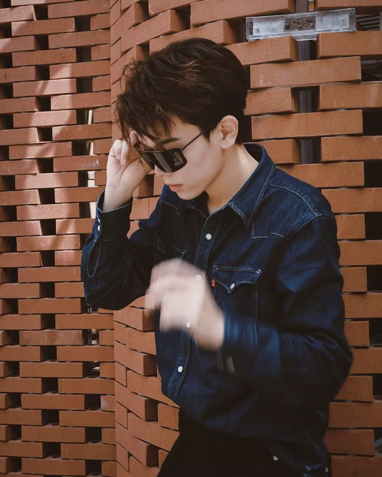

OPEN TO RA & INTERNSHIPS
[HUST · CLASS OF 2028]
> multimodal_agents
world_models_
hi there, welcome to
Jiheng's world
I'm Jiheng Li 李继亨, a third-year undergrad in Intelligence Science & Technology at HUST. I'm interested in multimodal models that have to act on what they see, and lately in when a GUI agent really needs to see the screen.
> scroll_down()↓SAY HELLO.
I'm looking for research internships and RA positions in multimodal agents, world models or robot perception. Email is the fastest way to reach me.
